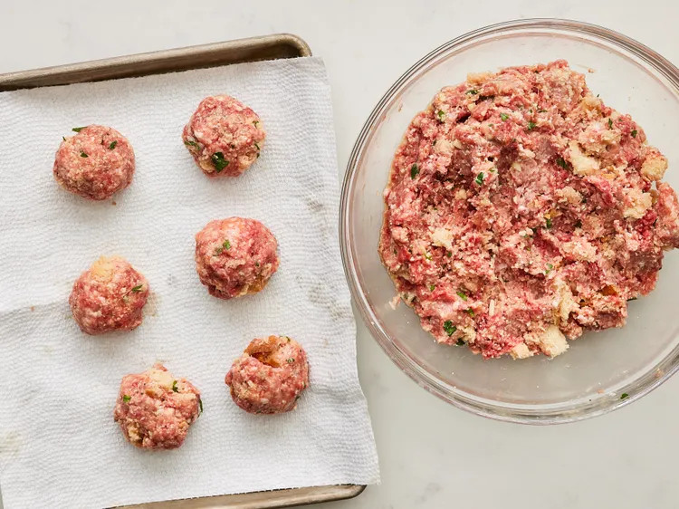

There’s a quiet upgrade happening in the meatball world, and it starts with an ingredient you probably already have in your fridge. It’s a small addition with a big payoff: softer, juicier meatballs that feel a little more nourishing and a lot more forgiving to cook. More than a hack, this trick actually works on a structural level. The secret isn’t more fat, more breadcrumbs, or a complicated technique. It’s a humble, high-protein staple: cottage cheese. Adding about half acup of cottage cheese per pound of ground meat transforms the texture of meatballs in a way that’s hard to achieve otherwise. Once mixed in and cooked, the curds melt into the mixture—you won’t see or taste them, but you’ll absolutely notice the difference in texture. The result? Meatballs that are noticeably more tender, moist, and protein-rich—without feeling heavy.
By Lisa Blake |